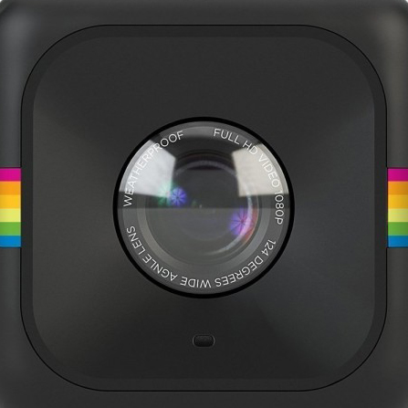
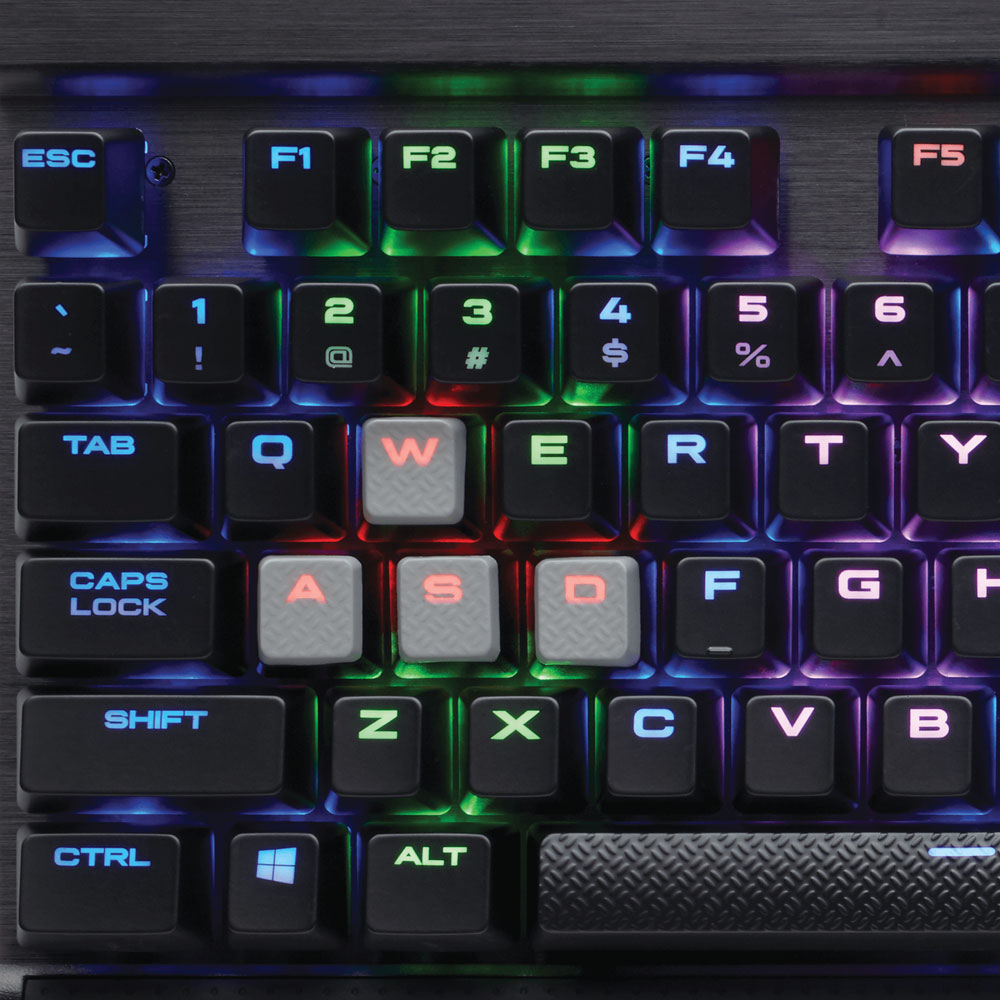

24 anni, nativo digitale, comincio ad appassionarmi alla tecnologia con i primi videogames e il primo computer. Cresce, nel frattempo, l'interesse per l'informatica e completo la mia formazione scolastica di base in quel settore presso un I.T.I. Frequento altri corsi di perfezionamento e arricchisco le mie competenze. Manca la soddisfazione, manca la creatività che vorrei esprimere. La trovo quando scopro le possibilità che mi offre la figura di Web Designer, partecipando al corso HackAdemy di Aulab.
#KickBoxing

#Musica
#Fotografia
#Computer
Aulab S.r.l, Bari (Italia)
www.aulab.it
Competenze acquisite:
HTML5, CSS3, PHP, JavaScript, Twitter Bootstrap, Framework MVC Laravel, Database MySQL, Strumenti di sviluppo condiviso (Git), Utilizzo console Linux, Metodologia Agile SCRUM
IFOA, Bari (Italia)
Competenze acquisite:
Conoscenza struttura interna PC & Smartphone, Installazione e configurazione componenti Hardware aggiuntivi, Riparazione componenti Hardware usurati, Sicurezza sul lavoro
Accademia Del Levante, Bari (Italia)
Competenze acquisite:
Configurazione avanzata su sistemi operativi Windows. Riconoscere gli apparati di rete e i loro protocolli. Implementare l'host di base, i dati e la sicurezza della rete. Risolvere problemi HW & SW
I.T.I.S M. Panetti, Bari (Italia)
Diploma perito informatico
Stage relativo al corso tecnico hardware tablet e mobile
TLC Riparafacile, Modugno (Italia)
? Lingua madre: Italiano
? Competenze comunicative: Buone competenze comunicative acquisite negli anni scolastici e durante i corsi professionalizzanti
? Competenze organizzative e gestionali: Ottime competenze organizzative acquisite lavorando in team ed applicando i principi delle metodologie agili
? Competenze professionali: Ottime competenze acquisite da autodidatta in campo grafico e utilizzo di software relativi come Adobe Photoshop e Adobe Illustrator. Ottime competenze acquisite da autodidatta in videomaking e utilizzo di software relativi come Adobe After Effects e Sony Vegas. Buona conoscenza degli strumenti Microsoft Office. Buona conoscenza di Java e C++. Ottima conoscenza di Html5, Laravel, PHP e del framework CSS Twitter Bootstrap.
? Patente di guida: B
| Comprensione | Parlato | Produzione scritta | ||
|---|---|---|---|---|
| Ascolto | Parlato | Interazione | Produzione orale | |
| B1 | B1 | B1 | A2 | A2 |
Mail: vitoranieri94@gmail.com